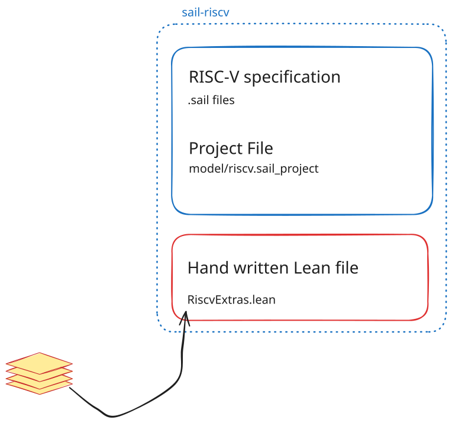
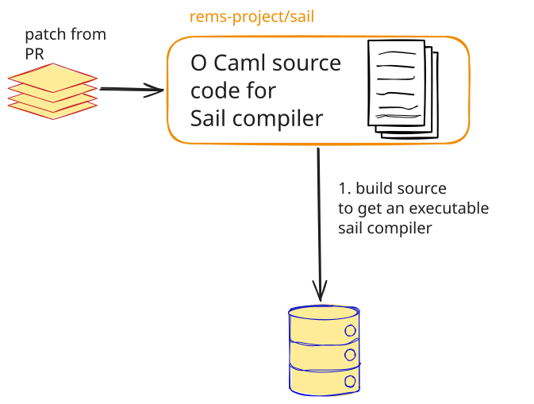
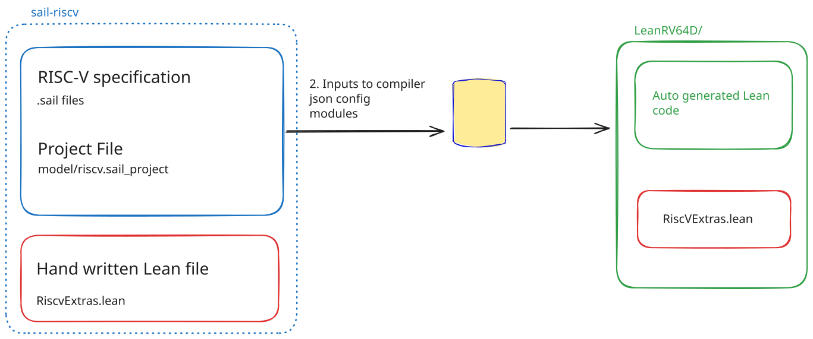
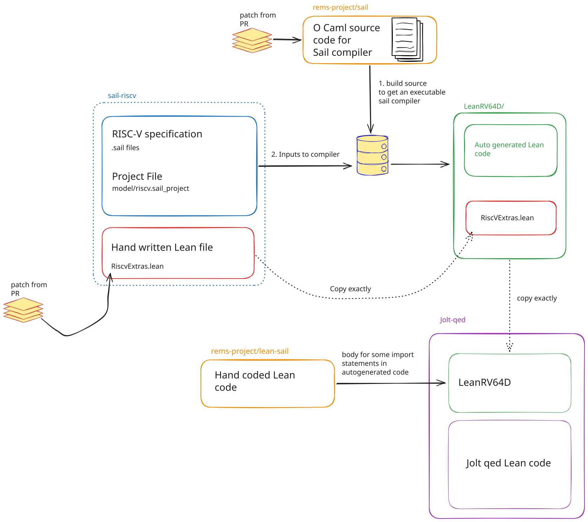

Sail To Lean Translation
Since we started jolt-qed sometime around April of 2026, there have been improvements to Lean and the compiler.
Quang Dao[1] generously took the time to upgrade jolt-qed to use Lean version 4.35 (from 4.29), and a more up to date version of the sail compiler (PR #36).
Additionally, Mathlib and lean-sail (the runtime library for the generated Lean code) were also upgraded.
Last time, we did a poor job of describing how we got our “trusted” Lean code for the RISC-V instruction set architecture (ISA)[2].
As enough files have changed, and we have a bit more time, we give a semi-detailed of account of what is going on.
That is, how did we get this trusted Lean code for the RISC-V ISA?
There is a lot of code that is needed to get this translation, so we first, we introduce the characters of our play. Broadly, there are four types of files.
-
Specification files written written in the Sail language[3]. These are the ground truth for the RISC-V ISA. These files are maintained in the sail-riscv repository.
-
Source code for the Sail compiler. We build this source to get an executable which is our compiler. This compiler takes the Sail specification as input, and outputs a RISC-V specification in Lean, C and other languages. The source code for the compiler is maintained by in the rems-project/sail repository.
-
Helper files. These are handwritten files that aid the compilation process. We describe them in more detail in the sections below.
-
Finally, there is our code which translates Jolt written in rust to Lean. Then proves theorems. Some of these theorems are proven against auto-generated Lean code.
Below we describe each file in greater detail.
The Specification
The Sail Files
This is the specification of the RISC-V ISA.
It is written in Sail, a domain-specific language for describing ISA semantics.
This specification has been adopted by RISC-V International as the formal specification of the RISC-V ISA.
The code can be found in the sail-riscv repository, and the commit we are using is 266473f.
As everything is clearer with a working example, here is some code from the specification that describes 6 RISC-V instructions.
function clause execute ITYPE(imm, rs1, rd, op) = {
let immext : xlenbits = sign_extend(imm);
X(rd) = match op {
ADDI => X(rs1) + immext,
SLTI => zero_extend(bool_to_bit(X(rs1) <_s immext)),
SLTIU => zero_extend(bool_to_bit(X(rs1) <_u immext)),
ANDI => X(rs1) & immext,
ORI => X(rs1) | immext,
XORI => X(rs1) ^ immext
};
RETIRE_SUCCESS
}It is mostly self explanatory.
ADDI reads rs1 and adds the contents to a sign extended imm operand, and stores the output in register rd.
The source code can be found in model/extensions/I/base_insts.sail, lines 158–169.
Eventually, we will want an equivalent version of this in the generated Lean code.
The Modules
The RISC-V specification is a collection of 158 .sail files in the model/ folder of sail-riscv repository.
Each file holds some code from the specification which describes something about the RISC-V ISA.
A module is a named group of .sail files and other modules, together with a list of the modules it depends on.
In more simple words, loosely, a module is the logical grouping of files in the project and a description of what those file depends on.
Now there is a single file model/riscv.sail_project that lists every module, its .sail files and the modules it depends on.
For example, here is the module I from that file.
I is a module that itself contains the two modules I_types and I_insts, and it depends on the module core.
I {
requires core
I_types {
before sys
files extensions/I/base_types.sail
}
I_insts {
requires exceptions, sys, I_types, Zicfilp_regs
files
extensions/I/base_insts.sail,
if $RMEM then
extensions/I/jalr_rmem.sail
else
extensions/I/jalr_seq.sail
}
}The module I_types includes one file, extensions/I/base_types.sail.
Its line before sys tells the compiler[4] to process I_types before the module sys.
The module I_insts depends on 4 other modules named exceptions, sys, I_types and Zicfilp_regs, and on the modules its parent modules depend on.
RMEM is a flag that can be true or false, and only one of the two files jalr_rmem or jalr_seq is included.
Dependency is described by require, and is what one might expect.
In the code block above different variants of op were ADDI, SLTI and so on.
Where did these names come from?
They are defined in model/extensions/I/base_types.sail as shown below.
enum iop = {ADDI, SLTI, SLTIU, XORI, ORI, ANDI} // immediate opsAs I_types is required by I_insts, the compiler will know what files to pull in.
The Helpers
When writing the specification, the sail-riscv authors sometimes use functions whose body is not defined in any .sail file.
For example, look at the following code from the specification in model/sys/sys_reservation.sail:
val load_reservation = impure {interpreter: "Platform.load_reservation", cpp: "load_reservation", c: "load_reservation", lem: "load_reservation"} : forall 'n, 0 < 'n < max_mem_access . (/* addr */ physaddrbits, /* width */ int('n)) -> unitIt says that there is a function called load_reservation, which takes an address and a width and returns nothing.
It does not say what the function does, and no .sail file gives it a body.
The list in braces gives, for each language in which we describe specification, the name of the function that tool should call.[5]
Lean is not in the list, so the generated Lean code calls load_reservation by its own name in Lean version of the spec (the default behaviour).
So the compiler will translate every call to load_reservation, but if we build our Lean program, there is no body for it to translate.
As a result, the generated Lean code will not build.
For builds to pass, the sail-riscv authors handwrite some Lean code, which the compiler copies over to the generated Lean project unchanged.
All this code is listed in one file, handwritten_support/RiscvExtras.lean.
For load_reservation, the authors hand wrote this line of Lean code:
axiom load_reservation : Arch.pa → Nat → SailM UnitThey too did not give it any body, but they gave it a type. This is enough for the generated Lean code to type check, but it is not enough for execution. This is part of the reason the generated Lean code is non computable.
Getting The Specification Locally
So the story looks like this so far. We have described all the specification files that fully describe the RISC-V ISA, and we have some helper files for methods that do not have sail functions.

This section describes how to get a copy of the specification files on your own computer.
Start in the directory where you want to keep the build; we will put everything[6] in scratch/sail-build/.
We clone our fork of sail-riscv and check out the right commit hash.
Replace /absolute/path/to/jolt-qed with the absolute path to your checkout of jolt-qed, where we keep the patch.
We apply that patch to make the handwritten helpers work with the newer compiler and Lean version.[7]
# Where to find the patch.
# For Fish use this instead: set JOLT_QED /absolute/path/to/jolt-qed
JOLT_QED=/absolute/path/to/jolt-qed
# Keep the specification and compiler builds in the same scratch folder.
mkdir -p scratch/sail-build
# Download the RISC-V specification.
git clone https://github.com/abiswas3/sail-riscv.git scratch/sail-build/sail-riscv
# Go to the exact version of the specification that we use.
git -C scratch/sail-build/sail-riscv checkout 266473f8b2872ac25f5cfaf5a4293d6421a40b5d
# Apply our two-line change to RiscvExtras.lean.
git -C scratch/sail-build/sail-riscv apply "$JOLT_QED/sail-import/patches/sail-riscv-lean-handwritten.patch"The Compiler
With these three characters, we have everything we need to describe the RISC-V ISA, but we still need a compiler to translate the specification into Lean code.
We now introduce the compiler, a program written in OCaml. It is general purpose in that it can generate code in several languages, including Lean and C. We will use the generated C code later to do differential testing, but that is a topic for another post.
Our first step is to compile the compiler from its source to a binary file that is executable. Then we will take that executable, feed it appropriate command line arguments and complete our translation.
The rest of this section is the mechanical description of how to get this binary. Below are detailed instructions on how to build the compiler from source[8]. We tested this build with opam 2.6.1, OCaml 5.4.1, Dune 3.24.2 and Z3 4.16.0.

sail binary.First install a C compiler, Git, GMP (a library for large numbers), Z3 (a solver the compiler uses to check the specification), pkgconf (which helps find installed libraries) and opam (OCaml’s package manager). On Arch Linux:
sudo pacman -S --needed base-devel git gmp z3 pkgconf opamOn macOS (AI generated, I cannot vouch this works)
# Install a C compiler and Git.
xcode-select --install
brew install gmp z3 pkgconf opamRun this from the same directory where you created scratch/sail-build/ above.
# Where to find the patch. Replace this with your checkout's absolute path.
# For Fish use this instead: set JOLT_QED /absolute/path/to/jolt-qed
JOLT_QED=/absolute/path/to/jolt-qed
# Keep the sources, OCaml environment, cache and installed compiler together.
cd scratch/sail-build
# For Fish use this instead: set -gx SAIL_BUILD_DIR "$PWD"
export SAIL_BUILD_DIR="$PWD"
# For Fish use this instead: set -gx OPAMROOT "$SAIL_BUILD_DIR/opam"
export OPAMROOT="$SAIL_BUILD_DIR/opam"
# For Fish use this instead: set -gx XDG_CACHE_HOME "$SAIL_BUILD_DIR/cache"
export XDG_CACHE_HOME="$SAIL_BUILD_DIR/cache"
# Initialise this separate opam root without changing shell startup files
# or creating a default OCaml environment.
opam init --bare --no-setup
# Create a separate environment called "sail", with its own OCaml 5.4.1 compiler
# and its own libraries (like a Python virtual environment).
opam switch create sail 5.4.1
# Make this terminal use that OCaml installation.
# For Fish use this instead: opam env --switch sail --shell=fish | source
eval "$(opam env --switch sail --shell=bash)"
# Check the OCaml compiler version (5.4.1).
ocamlc -version
# Download the source code of the compiler.
git clone https://github.com/rems-project/sail.git
cd sail
# Go to the exact version of the compiler that we use.
git checkout 2ae2199f8890180a8f9653f6ea08e54cd9790220
# Apply the fix from the unmerged pull request rems-project/sail#1774.
# We keep this fix as a patch file in our repository, jolt-qed.
git apply "$JOLT_QED/sail-import/patches/1774-type-arithmetic.patch"
# Install the OCaml libraries that the compiler depends on.
opam install --deps-only .
# Compile the compiler.
dune build --release
# Install the compiler beside the source checkout.
dune install --release --prefix "$SAIL_BUILD_DIR/sail-install"
# Check that it works. This prints the compiler's version, 0.20.3.
"$SAIL_BUILD_DIR/sail-install/bin/sail" --versionOPAMROOT tells opam where this environment lives.
The activation command (eval in Bash, or source in Fish) puts the sail switch’s tools on this terminal’s PATH, so the subsequent dune commands use the dependencies installed in that switch.
The source checkout is in scratch/sail-build/sail/, and the installed compiler is in scratch/sail-build/sail-install/bin/sail.
To return to the build in a new terminal, replace the two paths below with your checkout and build directories:
# For Fish use this instead: set JOLT_QED /absolute/path/to/jolt-qed
JOLT_QED=/absolute/path/to/jolt-qed
cd /absolute/path/to/scratch/sail-build
# For Fish use this instead: set -gx SAIL_BUILD_DIR "$PWD"
export SAIL_BUILD_DIR="$PWD"
# For Fish use this instead: set -gx OPAMROOT "$SAIL_BUILD_DIR/opam"
export OPAMROOT="$SAIL_BUILD_DIR/opam"
# For Fish use this instead: set -gx XDG_CACHE_HOME "$SAIL_BUILD_DIR/cache"
export XDG_CACHE_HOME="$SAIL_BUILD_DIR/cache"
# For Fish use this instead: opam env --switch sail --shell=fish | source
eval "$(opam env --switch sail --shell=bash)"
cd sail
"$SAIL_BUILD_DIR/sail-install/bin/sail" --versionGenerating Lean Code
Now we have both the compiler and the specification on our local machine.
Continue in the same terminal, using JOLT_QED and SAIL_BUILD_DIR from the build instructions above.
Set the environment variables below and cd into the specification’s model/ directory.
In our jolt-qed repository we have a file called sail-import/PROVENANCE.toml.
Amongst other things, here we list a subset of modules we want translated (remember the project file we introduced earlier).
We wrote a small ai generated bash command that uses python3 to pull out the modules and set them as an environment variable[9].
# The compiler's installed libraries.
# For Fish use this instead: set -gx SAIL_DIR "$SAIL_BUILD_DIR/sail-install/share/sail"
export SAIL_DIR="$SAIL_BUILD_DIR/sail-install/share/sail"
# For Fish use this instead: set CONFIG "$JOLT_QED/sail-import/rv64d_jolt.json"
CONFIG="$JOLT_QED/sail-import/rv64d_jolt.json"
# For Fish replace the next line with: set MODULES \
MODULES=( \
A_types B_types CFI_types FD_core H I_insts I_types \
K_core M_insts M_types Smcntrpmf Sscofpmf Ssqosid Sstc \
Stateen_csrs Stateen_regs Svinval V_core V_types Zaamo \
Zalrsc Zawrs_insts Zawrs_types Zba Zbb Zbc Zbkb Zbkx \
Zbs Zca Zcb Zcmop Zibi_insts Zibi_types Zicbom_insts \
Zicbom_types Zicbop_insts Zicbop_types Zicboz Zicfilp_insts \
Zicfilp_regs Zicfiss_insts Zicfiss_regs Zicntr Zicond_insts \
Zicond_types Zicsr_insts Zicsr_types Zifencei Zihintntl_insts \
Zihintntl_types Zihintpause Zihpm Zimop Zkn Zkr Zks \
Zvabd_types Zvk_core core exceptions main pmp postlude \
prelude rmem sys unit_tests
# For Fish omit the closing parenthesis below.
)
cd "$SAIL_BUILD_DIR/sail-riscv/model"
mkdir -p ../buildThis environment variable MODULES will be later fed into the compiler as a command line argument.
Now we have everything to compile.
So we do so with this command.
# Run the compiler. The flags are the ones upstream sail-riscv uses to generate its own Lean code.
# The result goes into the folder ../build/Lean_RV64D.
# For Fish use this instead on the last line: riscv.sail_project $MODULES
"$SAIL_BUILD_DIR/sail-install/bin/sail" \
--strict-var --strict-bitvector --strict-exponentials \
--require-version 0.20.1 \
--memo-z3-path ../build/sail_smt_cache \
--config "$CONFIG" \
--lean \
--memo-z3 \
--lean-output-dir ../build \
--lean-force-output \
--lean-non-beq-type instruction \
--lean-non-beq-type ExecutionResult \
--lean-non-beq-type Step \
--lean-noncomputable \
--lean-noncomputable-function encdec_forwards \
--lean-noncomputable-function encdec_backwards \
--lean-noncomputable-function encdec_forwards_matches \
--lean-noncomputable-function encdec_backwards_matches \
--lean-noncomputable-function encdec_compressed_forwards \
--lean-noncomputable-function encdec_compressed_backwards \
--lean-noncomputable-function encdec_compressed_forwards_matches \
--lean-noncomputable-function encdec_compressed_backwards_matches \
--lean-import-file ../handwritten_support/RiscvExtras.lean \
-o Lean_RV64D \
riscv.sail_project "${MODULES[@]}"There is a lot going on here.
-
Line 9 tells the compiler to generate Lean code.
-
Line 7 sets the path to the SMT solver’s cache, we do not need to worry about this. It is the implementation detail of the compiler and how it uses z3. We do not care how the compiler works for now, just how to use it.
-
Line 4 is the path of the compiler executable.
-
Line 11 chooses
../buildas the directory in which to create the generated Lean project. Line 26 supplies its name,Lean_RV64D, so the project goes in../build/Lean_RV64D/. -
Line 25 supplies the handwritten Lean helper we introduced earlier,
handwritten_support/RiscvExtras.lean. The compiler copies it into the generated Lean project and imports it. While copying it, the compiler replacesTHE_MODULE_NAMEwithLeanRV64D. -
Line 27 supplies the specification’s project file and the list of modules we want to translate.
riscv.sail_projectis the project file we saw earlier: it lists the modules and the.sailfiles they contain.MODULESholds our chosen subset of the module names listed inriscv.sail_projectas described above.
-
Line 5 enables three compiler checks on the specification.
-
--strict-varmakes the compiler report an error and stop translation if a mutable variable in the specification is introduced withoutvar. In this function,countis mutable: the loop changes it withcount = new_count. It is already declared withvar, so it passes this check. If it was not declared withvarthe compilation would fail.val count_ones : forall 'n, 'n >= 0. (bits('n)) -> range(0, 'n) function count_ones(x) = { var count : range(0, 'n) = 0; foreach (i from 0 to ('n - 1)) { if x[i] == 0b1 then { let new_count = count + 1; assert(new_count <= 'n); count = new_count; } }; count }Below is how the above snippet looks once it has been translated. The mutable count is stored in
loop_vars, marked as mutable withlet mut:/-- Type quantifiers: k_n : Nat, k_n ≥ 0, k_n ≥ 0 -/ def count_ones (x : (BitVec k_n)) : SailM Nat := do let count : Nat := 0 let loop_i_lower := 0 let loop_i_upper := ((Sail.BitVec.length x) -i 1) let mut loop_vars := count for i in [loop_i_lower:loop_i_upper:1]i do let count := loop_vars loop_vars ← do if (((BitVec.access x i) == 1#1) : Bool) then (do let new_count := (count +i 1) sail_assert (new_count ≤b (Sail.BitVec.length x)) "core/arithmetic.sail:85.28-85.29" (pure new_count)) else (pure count) (pure loop_vars) -
--strict-bitvectorrequires bitvector lengths in the specification to be nonnegative. -
--strict-exponentialsrequires exponents in type-level expressions in the specification, such as2 ^ n, to be nonnegative.
-
-
Line 6 requires compiler version
0.20.1or later. Our compiler is version0.20.3, so it passes this check. Sail manual: version check. -
Line 8 gives the compiler a JSON configuration file. We change three settings in the default RV64D configuration from
truetofalse, because Jolt does not support these features:memory.misaligned.supported: misaligned memory accesses, such as a four-byte load from an address that is not a multiple of four.extensions.Zicfilp.supported: landing pads, which check where indirect calls and jumps land.extensions.Zicfiss.supported: shadow stacks, which check function return addresses.
The modified file is
$JOLT_QED/sail-import/rv64d_jolt.json, whose path we store inCONFIGabove. -
Line 10 tells the compiler to save and reuse answers from Z3, so repeated checks can be faster. Line 7 specifies where to keep that cache. Sail manual: solver caching.
-
Line 12 allows the compiler to generate into that project directory again if it already exists, removing the old generated Lean files first.
-
Lines 13–15 tell the compiler to omit
deriving BEqfor three types in the generated Lean code.BEqsupplies Boolean equality, used by==. The three types areinstruction,ExecutionResult, andStep.For example, the generated Step type derives
InhabitedandRepr, with noBEq:inductive Step where | Step_Pending_Interrupt (_ : (InterruptType × Privilege)) | Step_Ext_Fetch_Failure (_ : ext_fetch_addr_error) | Step_Fetch_Failure (_ : (virtaddr × ExceptionType)) | Step_Execute (_ : (ExecutionResult × instbits)) | Step_Waiting (_ : WaitReason) deriving Inhabited, Repr -
Line 16 adds
noncomputable sectionto the generated Lean code. This allows definitions to depend on helpers declared as axioms, such asload_reservation, without requiring executable implementations of those helpers. -
Lines 17–24 mark the eight named functions as
noncomputablein the generated Lean code. The generated Lean code still contains their definitions, as seen in encdec_forwards, one of the functions listed above.
At the end of all this, you should have a folder called Lean_RV64D at $SAIL_BUILD_DIR/sail-riscv/build/Lean_RV64D/.
It contains the generated Lean code in the LeanRV64D/ folder and the LeanRV64D.lean file.
We then copy both into jolt-qed:
cp -R "$SAIL_BUILD_DIR/sail-riscv/build/Lean_RV64D/LeanRV64D" "$JOLT_QED/"
cp "$SAIL_BUILD_DIR/sail-riscv/build/Lean_RV64D/LeanRV64D.lean" "$JOLT_QED/"So now we get the following picture

LeanRV64D.The Runtime Library
Unfortunately, we are still not done. Though theoretically, we should be.
To execute ADDI, the specification reads the register rs1 with X(rs1).
X is a shorthand, and reading with it calls rX_bits, which turns the register index into a number and calls rX (model/core/regs.sail, lines 229–235).
Here is rX in the specification.
function rX (Regno(r) : regno) -> xlenbits = {
let v : regtype =
match r {
0 => zero_reg,
1 => x1,
2 => x2,
// ... and so on for registers 3 to 30
31 => x31,
};
regval_from_reg(v)
}Register 0 in RISC-V always holds zero, so rX returns the constant zero_reg for it.
Every other number picks one of the registers x1 to x31.
In Sail, writing the name of a register, say by writing x1, reads x1.
There is no separate function call to read x1.
Here is the Lean code the compiler generated for rX.
def rX (app_0 : regno) : SailM (BitVec 64) := do
let .Regno r := app_0
let v ← (( do
match r with
| 0 => (pure zero_reg)
| 1 => readReg x1
| 2 => readReg x2
-- ... and so on for registers 3 to 30
| _ => readReg x31 ) : SailM regtype )
(pure (regval_from_reg v))Each register read in the Sail code has become a call to readReg.
But none of the 135 files in LeanRV64D/ defines readReg.
Reading a register is built into the Sail language, so the specification does not define it either, and the compiler has no Sail code to translate.
The body of readReg comes from lean-sail, a small Lean library written by the same people who wrote the compiler.
Every generated Lean file starts with import Sail, and that import is this lean-sail library.
Here is readReg in Sail/ConcurrencyInterfaceV1.lean.
@[simp_sail]
def readReg (r : Register) : PreSailM RegisterType c ue (RegisterType r) := do
let .some s := (← get).regs.get? r
| throw .Unreachable
pure sreadReg looks up the register r in the machine’s state and returns its value.
lean-sail also defines that state, which we discussed in detail in How to Model a CPU in Lean.
So readReg is in the same position as load_reservation from The Helpers.
The generated code calls both, and neither has a body in the specification.
load_reservation is specific to RISC-V, so the sail-riscv authors wrote a stand-in for it in RiscvExtras.lean.
readReg is needed by every Sail specification, whatever the ISA, so the compiler’s authors wrote it once, in lean-sail.
Without import Sail, readReg would be an unknown name, and the generated code would not build.
The same is true of writeReg, which wX uses to write a register.
The compiler and lean-sail are released together, and the compiler at commit 2ae2199 expects lean-sail tag v8.
We copied only LeanRV64D/ into jolt-qed, so jolt-qed’s own lakefile.toml asks for lean-sail at v8.
lake-manifest.json pins that tag to commit 1e5b216.
Summary
Putting everything together we get the following picture

-
Thanks Quang! ↩
-
I wish in a rush, and got Claude to get the thing to pass and then forgot about it. We left behind instructions on how to reproduce the work, but admittedly, I myself was not sure of what I was doing. ↩
-
A domain specific language for writing ISAs. ↩
-
The program that does the translation. ↩
-
For example, the interpreter uses
Platform.load_reservation, while the C target usesload_reservation. ↩ -
We could not think of a better name. You are welcome to use any file path you want. ↩
-
The patch adds
open THE_MODULE_NAMEso the helper can refer to types inside the generated model’s namespace; the compiler replaces this placeholder withLeanRV64Dwhen copying the file. It also changesextension.toCtorIdxtoextension.ctorIdx, the name available in Lean 4.35, in the helper’sSizeOf extensioninstance. ↩ -
We apply the fix from rems-project/sail#1774 for missing parentheses in the Lean translation of type-level arithmetic. Without it, the compiler translates
(if true then 8 else 4) * 8asif true then 8 else 4 * 8, which Lean reads asif true then 8 else (4 * 8). This makesflen, the floating-point register width, 8 bits instead of 64. The PR is still open as of 9 November 2026, so we apply the saved patch insail-import/patches/1774-type-arithmetic.patchbefore building the compiler. ↩ -
Why do we only build a filter? Two reasons. One, Jolt does not use all of RISC-V, so we can ignore the vector instructions. Secondly, the version of Lean we are using limits the number of constructors an inductive type can have. If we translated every module, then the compiled lean code has inductive types with too many constructors. To alleviate ourselves from having to change the compiler, we just build the modules we need. ↩